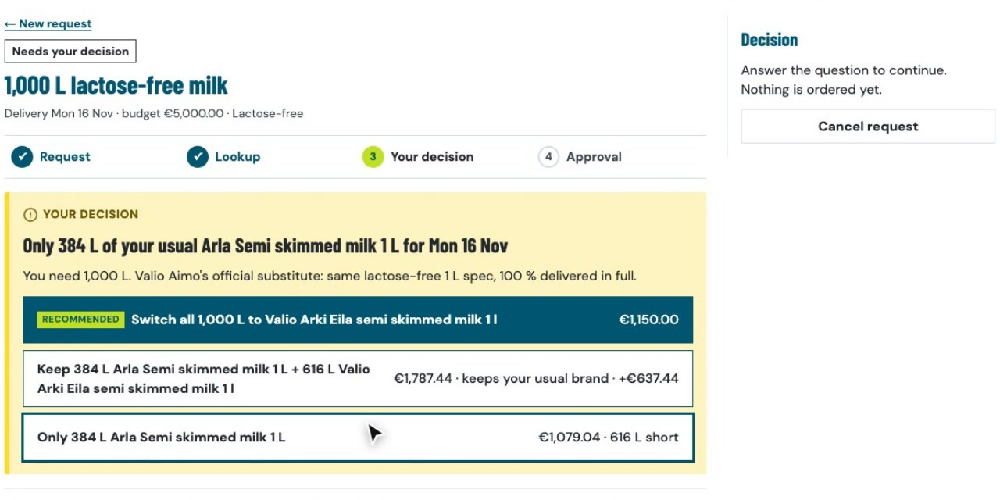

What we builtOpen to Agents Two parts. One flow. Agent workspaceKitchen request→ proposed basket Trusted Gateway OpenAPI 3.1 · owner-controlled policy LookupLimitsApprovalMockorder Valio AimoChallenge APIsProductsPrice · stock Or an external agentCompatible API · scoped token Human approvalOnly when required
See it workThe challenge’s own example 1,000 L. One stock-out. Lactose-free milk.By Monday. 384 Lof the usual productavailable in the demo. Watch demo ↗ youtu.be/CB_NcgdgK5k  Three options. The trade-off stays visible.
Gateway-enforced controlsIllustrated €500 demo policy Autonomy. Not a blank cheque. Alone Within its authority. 20 kg butter€42 · under the limit Humans sign Above the agent’s limit. 1,000 L milk€1,150 · needs approval Never Approve itselfCommit a stale quoteGuess allergens are safe One approval. One exact basket. Every decision on record.
Trusted Trade AgentsJunction 2026 Open to agents.On Valio Aimo’s terms. Built todayOpen API · approvals · audit trail Next, for productionProduction identity · supplier order API Synthetic systems. Local mock orders. No payments.
The DelusionalsOpen to Agents Thank you. Jakub Piotrowski linkedin.com/in/jakub-piotrowski97 Krish Waghresha linkedin.com/in/krish-waghresha